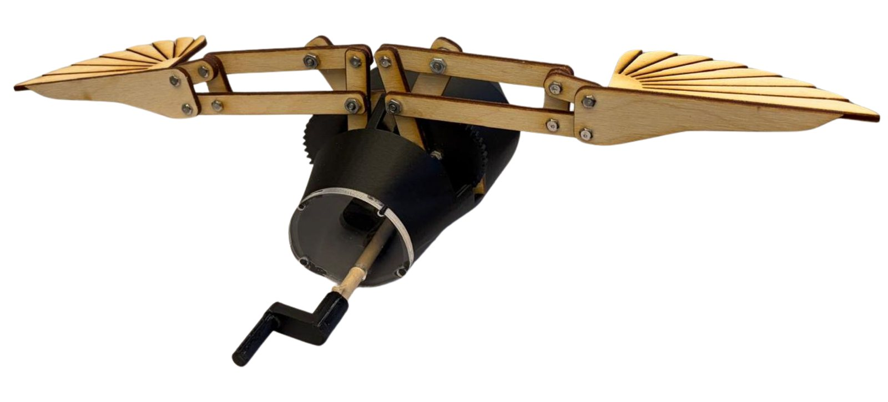
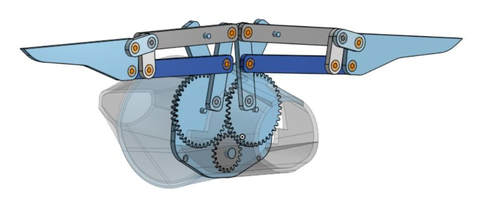
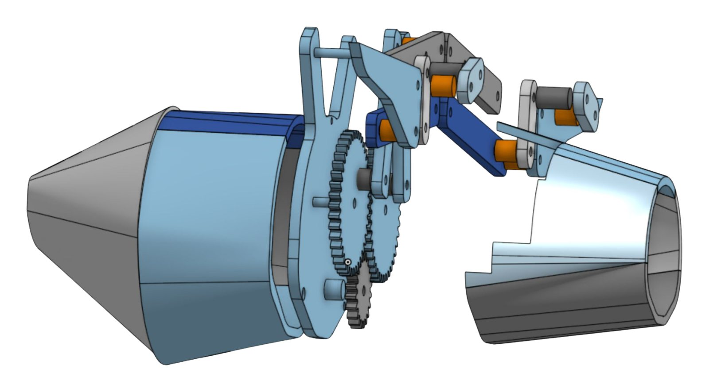
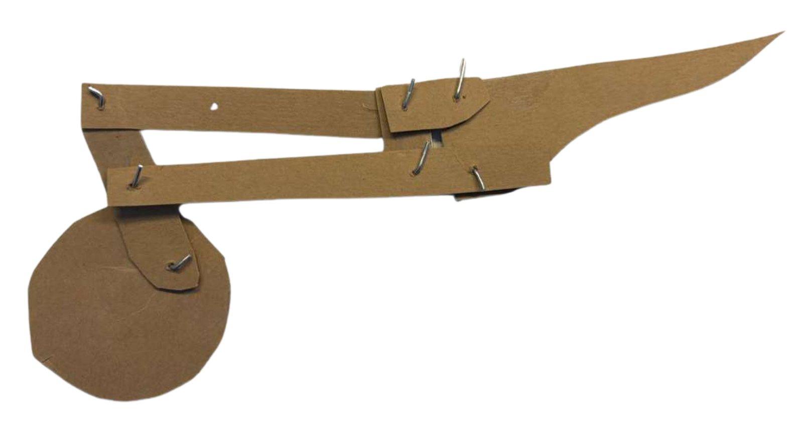
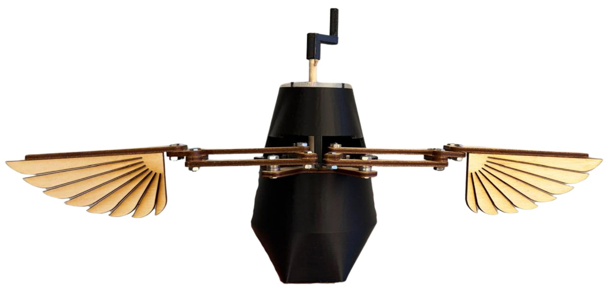

Flying Automata
A mechanical bird automaton with articulated wings, driven by gears and linkages.
Overview
I designed and fabricated a mechanical bird automaton with articulated wings from plywood, acrylic, and PLA. The project was a way to explore advanced CAD techniques, fine-tune 3D printing and laser cutting, and learn how mechanical linkages behave in motion. I made it in the second semester of my first year, for Mechanical Prototyping.
My role
This was a solo project, so I designed, fabricated, and assembled everything myself. My goals were to expand my Onshape skills, create a linkage that produces wing motion, and dial in the 3D printer and laser cutter settings. The mechanism uses a gear train and linkages.
Design & build
In Onshape I improved my part modeling and assembly skills and learned advanced techniques like lofting.


I used chipboard and 3D-printed prototypes to test joint fit and linkage movement, and to refine tolerances and linkage lengths before final fabrication. I fine-tuned the Prusa 3D printer settings (speed, infill, supports, walls, and more) for high precision, creating strong, accurate gears with tight press-fit joints.

Challenges
- Joints. I first planned to use dowels and sleeve bearings as joints, but after cutting a few linkage parts and testing them, they turned out to be very hard to assemble, so I changed the design to use screws and bolts.
- The handle. I hadn't considered the handle's placement during CAD. To resolve this, I extended the handle through the front of the bird's body. It was a practical solution but not ideal aesthetically; in future designs, I'll plan all parts before starting fabrication.
- Realistic wing motion. Designing a linkage that mimics the flapping of a bird's wings was challenging: many factors in the linkage affect the motion, and balancing them to get a natural movement was difficult.
Results
The final automaton assembled cleanly, with better joint fit and more fluid wing movement after adjusting tolerances and fasteners. The gears printed with tighter fits and greater precision, which reduced reprints and made the whole assembly more robust.
